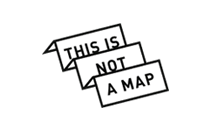

Open source e-commerce and marketplace made simple
{{ page.content | safe }}
{{ page.content | safe }}
Take advantage of a robust solution based on Java, and make e-shops with only HTML knowledge.
PostgreSQL, ElasticSearch, Jersey, Jetty, Dropwizard...

This is not a map
E-shop
Amphoria
Marketplace
Baglio di Pianetto
E-shop
Mayocat Shop is born out of two observations : the lack of a simple solution for small businesses who want to start an e-commerce site, and the advent of online marketplaces that bring together such actors in curated websites.
Indeed, the landscape of e-commerce open source software is dominated by complex solutions that meet the needs of actors with complex catalog, logistics and workflow needs.
Small businesses wishing to sell their products through a simple e-commerce sites are turning to the world of hosted software (SaaS), and their possibilities for customization and expansion are limited.
Meanwhile, marketplaces democratize and allow to unite around a brand or theme, e-merchant wishing to extend their broadcasts without incurring marketing action.
Mayocat open source software meets both the need for simplicity in managing small e-commerce businesses, and provides tools to connect them together through online marketplaces.
The feature-set offered by Mayocat is not too broad to keep the promise of simplified e-commerce. However, the platform is easily extensible via a plugin mechanism to accommodate special needs.
Among the basics features of e-commerce Mayocat Shop offers, we find:
The marketplace features allow to create and maintain strong e-commerces shops, as well as the programming interface for the development : lists and cross-shop research of products, shared cart, etc...
Mayocat is based on the Java platform, and uses modern open source technologies : Java 1.7, ElasticSearch, PostgreSQL, Jersey, Jetty and many more in order to streamline its development and provide the best performance and maximum scalability .